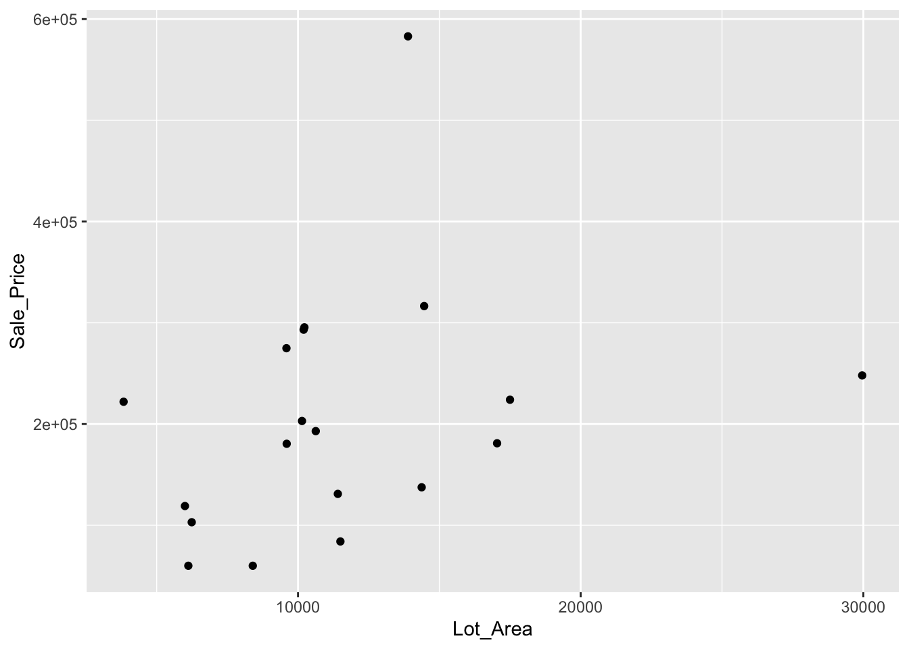

Chapter 6 Data Management
We will use the same data set, Ames Housing Price data, containing 165 observations and 12 features including the sale date and price. Suppose we want to find the houses that are sold in Jan 2010. You can use the function filter() in the dplyr package, a member of the tidyverse package.
See more about dplyr here
library(AmesHousing)
amesdata <- make_ames()6.1 Filter
We can use subsetting operations
amesdata[amesdata$Year_Sold == 2010 & amesdata$Mo_Sold == 1, ] ## # A tibble: 26 × 81
## MS_Sub…¹ MS_Zo…² Lot_F…³ Lot_A…⁴ Street Alley Lot_S…⁵ Land_…⁶ Utili…⁷ Lot_C…⁸
## <fct> <fct> <dbl> <int> <fct> <fct> <fct> <fct> <fct> <fct>
## 1 One_Sto… Reside… 43 5005 Pave No_A… Slight… HLS AllPub Inside
## 2 One_Sto… Reside… 105 11751 Pave No_A… Slight… Lvl AllPub Inside
## 3 Split_F… Reside… 85 10625 Pave No_A… Regular Lvl AllPub Inside
## 4 Two_Sto… Floati… 0 7500 Pave No_A… Regular Lvl AllPub Inside
## 5 Two_Sto… Reside… 102 12858 Pave No_A… Slight… Lvl AllPub Inside
## 6 One_Sto… Reside… 100 18494 Pave No_A… Slight… Lvl AllPub Corner
## 7 One_Sto… Reside… 43 3203 Pave No_A… Regular Lvl AllPub Inside
## 8 Two_Sto… Reside… 60 17433 Pave No_A… Modera… Lvl AllPub CulDSac
## 9 Two_Sto… Reside… 76 10142 Pave No_A… Slight… Lvl AllPub Inside
## 10 Two_Sto… Floati… 39 3515 Pave Paved Regular Lvl AllPub Inside
## # … with 16 more rows, 71 more variables: Land_Slope <fct>, Neighborhood <fct>,
## # Condition_1 <fct>, Condition_2 <fct>, Bldg_Type <fct>, House_Style <fct>,
## # Overall_Qual <fct>, Overall_Cond <fct>, Year_Built <int>,
## # Year_Remod_Add <int>, Roof_Style <fct>, Roof_Matl <fct>,
## # Exterior_1st <fct>, Exterior_2nd <fct>, Mas_Vnr_Type <fct>,
## # Mas_Vnr_Area <dbl>, Exter_Qual <fct>, Exter_Cond <fct>, Foundation <fct>,
## # Bsmt_Qual <fct>, Bsmt_Cond <fct>, Bsmt_Exposure <fct>, …Or we can use filter():
library(dplyr)##
## Attaching package: 'dplyr'## The following objects are masked from 'package:stats':
##
## filter, lag## The following objects are masked from 'package:base':
##
## intersect, setdiff, setequal, uniondplyr::filter(amesdata, Year_Sold == 2010, Mo_Sold == 1)## # A tibble: 26 × 81
## MS_Sub…¹ MS_Zo…² Lot_F…³ Lot_A…⁴ Street Alley Lot_S…⁵ Land_…⁶ Utili…⁷ Lot_C…⁸
## <fct> <fct> <dbl> <int> <fct> <fct> <fct> <fct> <fct> <fct>
## 1 One_Sto… Reside… 43 5005 Pave No_A… Slight… HLS AllPub Inside
## 2 One_Sto… Reside… 105 11751 Pave No_A… Slight… Lvl AllPub Inside
## 3 Split_F… Reside… 85 10625 Pave No_A… Regular Lvl AllPub Inside
## 4 Two_Sto… Floati… 0 7500 Pave No_A… Regular Lvl AllPub Inside
## 5 Two_Sto… Reside… 102 12858 Pave No_A… Slight… Lvl AllPub Inside
## 6 One_Sto… Reside… 100 18494 Pave No_A… Slight… Lvl AllPub Corner
## 7 One_Sto… Reside… 43 3203 Pave No_A… Regular Lvl AllPub Inside
## 8 Two_Sto… Reside… 60 17433 Pave No_A… Modera… Lvl AllPub CulDSac
## 9 Two_Sto… Reside… 76 10142 Pave No_A… Slight… Lvl AllPub Inside
## 10 Two_Sto… Floati… 39 3515 Pave Paved Regular Lvl AllPub Inside
## # … with 16 more rows, 71 more variables: Land_Slope <fct>, Neighborhood <fct>,
## # Condition_1 <fct>, Condition_2 <fct>, Bldg_Type <fct>, House_Style <fct>,
## # Overall_Qual <fct>, Overall_Cond <fct>, Year_Built <int>,
## # Year_Remod_Add <int>, Roof_Style <fct>, Roof_Matl <fct>,
## # Exterior_1st <fct>, Exterior_2nd <fct>, Mas_Vnr_Type <fct>,
## # Mas_Vnr_Area <dbl>, Exter_Qual <fct>, Exter_Cond <fct>, Foundation <fct>,
## # Bsmt_Qual <fct>, Bsmt_Cond <fct>, Bsmt_Exposure <fct>, …6.2 Arrange
Let’s find the 10 houses with the highest sale prices by year
ar <- arrange(amesdata, Year_Sold, desc(Sale_Price))
ar## # A tibble: 2,930 × 81
## MS_Sub…¹ MS_Zo…² Lot_F…³ Lot_A…⁴ Street Alley Lot_S…⁵ Land_…⁶ Utili…⁷ Lot_C…⁸
## <fct> <fct> <dbl> <int> <fct> <fct> <fct> <fct> <fct> <fct>
## 1 Two_Sto… Reside… 118 35760 Pave No_A… Slight… Lvl AllPub CulDSac
## 2 Two_Sto… Reside… 114 17242 Pave No_A… Slight… Lvl AllPub Inside
## 3 Two_Sto… Reside… 85 16056 Pave No_A… Slight… Lvl AllPub Inside
## 4 Two_Sto… Reside… 60 18062 Pave No_A… Slight… HLS AllPub CulDSac
## 5 Two_Sto… Reside… 82 16052 Pave No_A… Slight… Lvl AllPub CulDSac
## 6 Two_and… Reside… 90 22950 Pave No_A… Modera… Lvl AllPub Inside
## 7 One_Sto… Reside… 90 18261 Pave No_A… Slight… HLS AllPub Inside
## 8 One_Sto… Reside… 107 13891 Pave No_A… Regular Lvl AllPub Inside
## 9 Two_Sto… Reside… 59 16023 Pave No_A… Slight… HLS AllPub CulDSac
## 10 Two_Sto… Reside… 66 13682 Pave No_A… Modera… HLS AllPub CulDSac
## # … with 2,920 more rows, 71 more variables: Land_Slope <fct>,
## # Neighborhood <fct>, Condition_1 <fct>, Condition_2 <fct>, Bldg_Type <fct>,
## # House_Style <fct>, Overall_Qual <fct>, Overall_Cond <fct>,
## # Year_Built <int>, Year_Remod_Add <int>, Roof_Style <fct>, Roof_Matl <fct>,
## # Exterior_1st <fct>, Exterior_2nd <fct>, Mas_Vnr_Type <fct>,
## # Mas_Vnr_Area <dbl>, Exter_Qual <fct>, Exter_Cond <fct>, Foundation <fct>,
## # Bsmt_Qual <fct>, Bsmt_Cond <fct>, Bsmt_Exposure <fct>, …Or
arr <- amesdata[order(amesdata$Year_Sold, desc(amesdata$Sale_Price)), ]
head(arr)## # A tibble: 6 × 81
## MS_SubC…¹ MS_Zo…² Lot_F…³ Lot_A…⁴ Street Alley Lot_S…⁵ Land_…⁶ Utili…⁷ Lot_C…⁸
## <fct> <fct> <dbl> <int> <fct> <fct> <fct> <fct> <fct> <fct>
## 1 Two_Stor… Reside… 118 35760 Pave No_A… Slight… Lvl AllPub CulDSac
## 2 Two_Stor… Reside… 114 17242 Pave No_A… Slight… Lvl AllPub Inside
## 3 Two_Stor… Reside… 85 16056 Pave No_A… Slight… Lvl AllPub Inside
## 4 Two_Stor… Reside… 60 18062 Pave No_A… Slight… HLS AllPub CulDSac
## 5 Two_Stor… Reside… 82 16052 Pave No_A… Slight… Lvl AllPub CulDSac
## 6 Two_and_… Reside… 90 22950 Pave No_A… Modera… Lvl AllPub Inside
## # … with 71 more variables: Land_Slope <fct>, Neighborhood <fct>,
## # Condition_1 <fct>, Condition_2 <fct>, Bldg_Type <fct>, House_Style <fct>,
## # Overall_Qual <fct>, Overall_Cond <fct>, Year_Built <int>,
## # Year_Remod_Add <int>, Roof_Style <fct>, Roof_Matl <fct>,
## # Exterior_1st <fct>, Exterior_2nd <fct>, Mas_Vnr_Type <fct>,
## # Mas_Vnr_Area <dbl>, Exter_Qual <fct>, Exter_Cond <fct>, Foundation <fct>,
## # Bsmt_Qual <fct>, Bsmt_Cond <fct>, Bsmt_Exposure <fct>, …6.3 Pipe
Pipes help us apply multiple operations sequentially on a given data.
library(ggplot2)
amesdata %>%
filter(Year_Sold == 2009, Mo_Sold == 1) %>%
arrange(Year_Built) %>%
ggplot(mapping = aes(x = Lot_Area, y = Sale_Price)) +
geom_point()
6.4 Select
How do we select variables based on some characteristics
amesdata %>% select(starts_with("Year"), Sale_Price)## # A tibble: 2,930 × 4
## Year_Built Year_Remod_Add Year_Sold Sale_Price
## <int> <int> <int> <int>
## 1 1960 1960 2010 215000
## 2 1961 1961 2010 105000
## 3 1958 1958 2010 172000
## 4 1968 1968 2010 244000
## 5 1997 1998 2010 189900
## 6 1998 1998 2010 195500
## 7 2001 2001 2010 213500
## 8 1992 1992 2010 191500
## 9 1995 1996 2010 236500
## 10 1999 1999 2010 189000
## # … with 2,920 more rowsamesdata %>% select(contains("Mo"))## # A tibble: 2,930 × 2
## Year_Remod_Add Mo_Sold
## <int> <int>
## 1 1960 5
## 2 1961 6
## 3 1958 6
## 4 1968 4
## 5 1998 3
## 6 1998 6
## 7 2001 4
## 8 1992 1
## 9 1996 3
## 10 1999 6
## # … with 2,920 more rows6.5 Create & group_by()
We may want to create new variables as functions of the existing ones by mutate():
library(r02pro)
library(tidyverse)
amesdata %>%
select(Overall_Qual, Lot_Area, Sale_Price) %>%
mutate(ave_price = Sale_Price/Lot_Area) ## # A tibble: 2,930 × 4
## Overall_Qual Lot_Area Sale_Price ave_price
## <fct> <int> <int> <dbl>
## 1 Above_Average 31770 215000 6.77
## 2 Average 11622 105000 9.03
## 3 Above_Average 14267 172000 12.1
## 4 Good 11160 244000 21.9
## 5 Average 13830 189900 13.7
## 6 Above_Average 9978 195500 19.6
## 7 Very_Good 4920 213500 43.4
## 8 Very_Good 5005 191500 38.3
## 9 Very_Good 5389 236500 43.9
## 10 Good 7500 189000 25.2
## # … with 2,920 more rowsCan we summarize by groups? First let’s see an example for summarize:
amesdata %>%
summarize(n_houses = n(),
ave_liv_area = mean(Lot_Area),
prob = c(0.25, 0.75),
q_price = quantile(Sale_Price, c(0.25, 0.75),
na.rm = TRUE))## # A tibble: 2 × 4
## n_houses ave_liv_area prob q_price
## <int> <dbl> <dbl> <dbl>
## 1 2930 10148. 0.25 129500
## 2 2930 10148. 0.75 213500Another
amesdata %>%
group_by(Overall_Qual) %>%
summarize(n_houses = n(),
ave_liv_area = mean(Lot_Area),
ave_price = mean(Sale_Price),
na.rm = TRUE)## # A tibble: 10 × 5
## Overall_Qual n_houses ave_liv_area ave_price na.rm
## <fct> <int> <dbl> <dbl> <lgl>
## 1 Very_Poor 4 15214. 48725 TRUE
## 2 Poor 13 9326. 52325. TRUE
## 3 Fair 40 9439. 83186. TRUE
## 4 Below_Average 226 8464. 106485. TRUE
## 5 Average 825 9996. 134753. TRUE
## 6 Above_Average 732 9788. 162130. TRUE
## 7 Good 602 10309. 205026. TRUE
## 8 Very_Good 350 10618. 270914. TRUE
## 9 Excellent 107 12777. 368337. TRUE
## 10 Very_Excellent 31 18071. 450217. TRUE6.6 More tools
6.6.1 subset()
any(is.na(amesdata))## [1] FALSE#Pay attention to subset(). This will be a time-saver
sub <- subset(amesdata, amesdata$Overall_Qual != "Fair")
dim(sub)## [1] 2890 81dim(amesdata)## [1] 2930 81#You can drop columns (variables) as well
amesless = subset(amesdata, select = c("Sale_Type", "Mo_Sold"))
head(amesless)## # A tibble: 6 × 2
## Sale_Type Mo_Sold
## <fct> <int>
## 1 "WD " 5
## 2 "WD " 6
## 3 "WD " 6
## 4 "WD " 4
## 5 "WD " 3
## 6 "WD " 6However, look at the help(subset): “This is a convenience function intended for use interactively. For programming it is better to use the standard subsetting functions like [], and in particular the non-standard evaluation of argument subset can have unanticipated consequences”.
6.6.2 within() & with()
Here is an example to use within():
ana <- within(amesdata, Sale_Price[Fence != 2] <- 0)
#which is a short cut of
amesdata$Sale_Price[amesdata$Fence != 2] <- 0And with()
mean(with(amesdata, Sale_Price[Mo_Sold == 5 & Overall_Qual =="Good"]))## [1] 06.6.3 aggregate()
The aggregate() function in R can be used to calculate summary statistics for a dataset.
#create data frame
df <- data.frame(team=c('A', 'A', 'A', 'B', 'B', 'B'),
position=c('G', 'G', 'F', 'G', 'F', 'F'),
points=c(99, 90, 86, 88, 95, 99),
assists=c(33, 28, 31, 39, 34, 23),
rebounds=c(30, 28, 24, 24, 28, 33))
df## team position points assists rebounds
## 1 A G 99 33 30
## 2 A G 90 28 28
## 3 A F 86 31 24
## 4 B G 88 39 24
## 5 B F 95 34 28
## 6 B F 99 23 33#find mean points by team
aggregate(df$points, by=list(df$team), FUN=mean)## Group.1 x
## 1 A 91.66667
## 2 B 94.00000aggregate(df$points, by=list(df$team, df$position), FUN=mean)## Group.1 Group.2 x
## 1 A F 86.0
## 2 B F 97.0
## 3 A G 94.5
## 4 B G 88.0We can also define our own functions
mine <- function(x){
return(sort(x))
}
aggregate(df$points, by=list(df$assists), FUN=mine)## Group.1 x
## 1 23 99
## 2 28 90
## 3 31 86
## 4 33 99
## 5 34 95
## 6 39 88